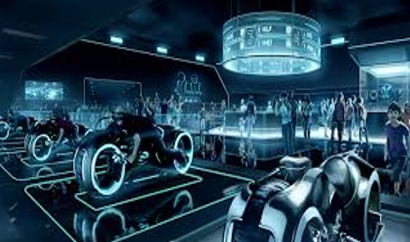

artificial intelligence
Military & video games

Military
The United States and other nations are developing AI applications for a range of military functions. The main military applications of Artificial Intelligence and Machine Learning are to enhance C2, Communications, Sensors, Integration and Interoperability. AI research is underway in the fields of intelligence collection and analysis, logistics, cyber operations, information operations, command and control, and in a variety of semiautonomous and autonomous vehicles. Artificial Intelligence technologies enable coordination of sensors and effectors, threat detection and identification, marking of enemy positions, target acquisition, coordination and DE confliction of distributed Join Fires between networked combat vehicles and tanks also inside Manned and Unmanned Teams (MUM-T). AI has been incorporated into military operations in Iraq and Syria.
Worldwide annual military spending on robotics rose from US$5.1 billion in 2010 to US$7.5 billion in 2015. Military drones capable of autonomous action are widely considered a useful asset. Many artificial intelligence researchers seek to distance themselves from military applications of AI.
Video games
In video games, artificial intelligence is routinely used to generate dynamic purposeful behavior in non-player characters (NPCs). In addition, well-understood AI techniques are routinely used for path finding. Some researchers consider NPC AI in games to be a "solved problem" for most production tasks. Games with more atypical AI include the AI director of Left 4 Dead (2008) and the neuroevolutionary training of platoons in Supreme Commander 2 (2010).